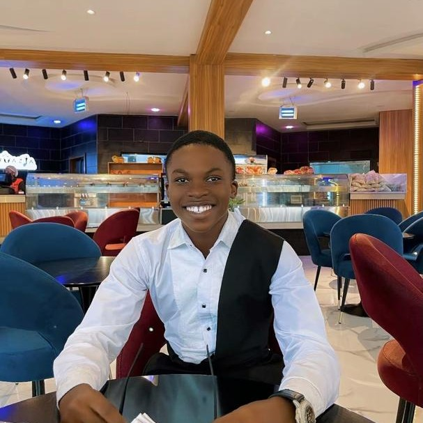

Divine Nwokedi | WDD 130
Hi, I'm Divine, a creative and curious individual with a passion for learning and exploring new ideas. I'm excited to share my thoughts and connect with others who share my enthusiasm for innovation and growth. As someone who's drawn to the world of technology, I'm constantly seeking out new challenges and opportunities to grow, whether that's through coding, problem-solving, or collaborating with others to bring innovative ideas to life. With a strong foundation in web development and a keen interest in emerging technologies, I'm always looking for ways to expand my skillset and stay up-to-date with the latest trends and advancements. I'm passionate about using technology to solve real-world problems and make a positive impact on society. I'm looking forward to meeting new people, sharing experiences, and learning from others in this community, and I'm excited to see where this journey takes me